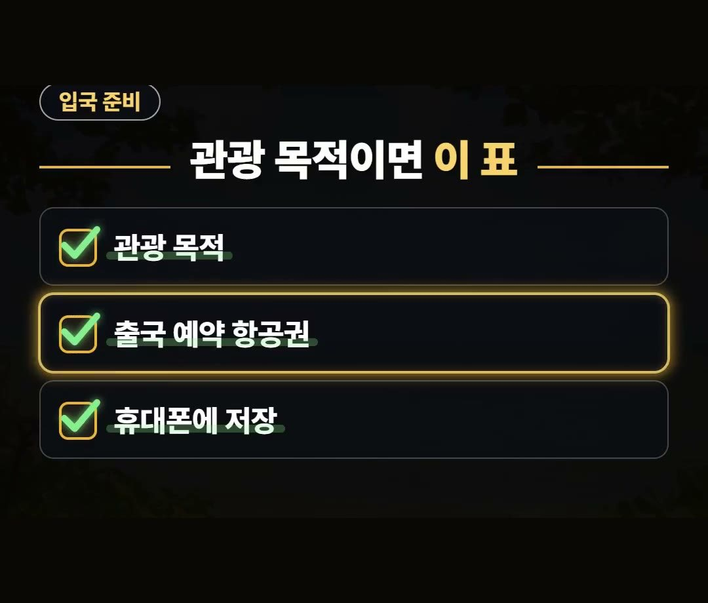
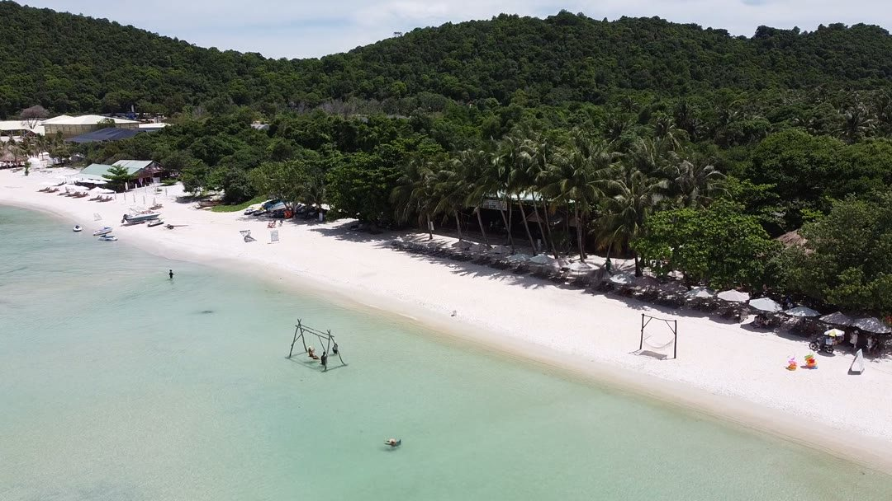
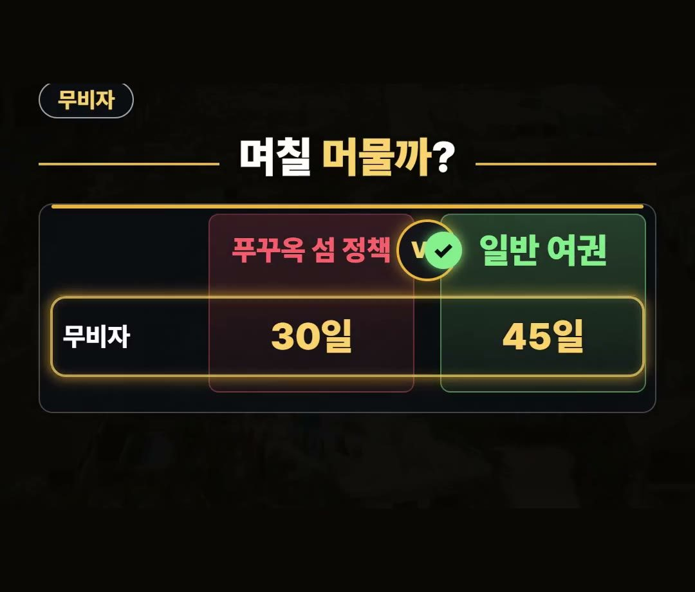
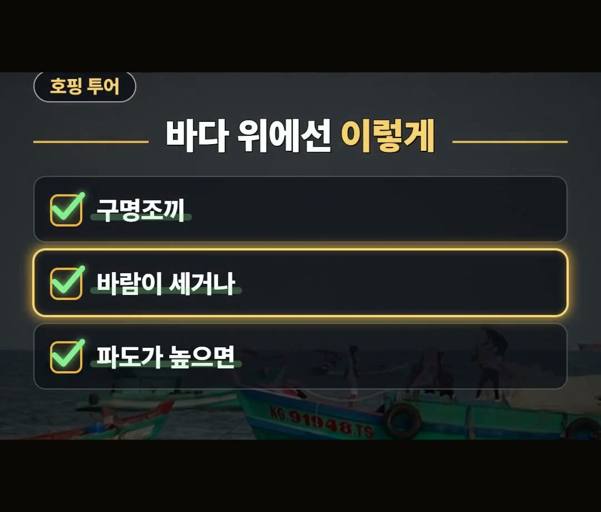
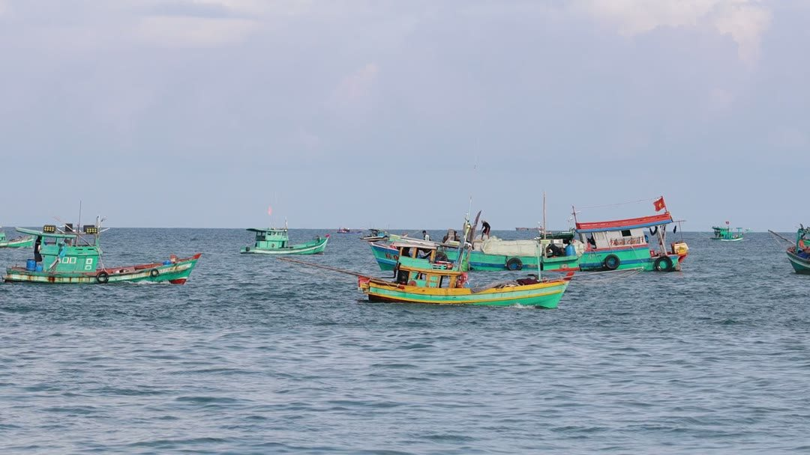

푸꾸옥 여행 준비물, 무비자 45일이어도 돌아갈 항공권부터 챙기세요
※ 이 글에는 제휴 링크가 포함되어 있으며, 링크를 통해 예약·구매하시면 일정 수수료를 받을 수 있습니다. (가격은 같습니다)
※ 이 포스팅은 쿠팡 파트너스 활동의 일환으로, 이에 따른 일정액의 수수료를 제공받습니다.
푸꾸옥 여행 준비물이라고 하면 짐 가방부터 떠올리기 쉬운데, 놓치기 쉬운 것은 휴대폰 속 돌아갈 항공권 예약 내역이에요.
우리 일반 여권은 베트남 45일 무비자지만, 외교부는 관광 목적이면 출국 예약 항공권이 필요하다고 안내하고 있어서 이게 없으면 입국에서 막힐 수 있습니다.
이 글에서는 입국할 때 챙길 것부터 호핑 투어 날, 출국 날까지 2026년 10월 외교부·총영사관·베트남 관광청 공식 안내 기준으로 정리했어요.
대한민국 일반 여권은 베트남 45일 무비자예요.
다만 관광 목적이면 출국 예약 항공권이 필요하다고 외교부가 안내하니, 돌아갈 항공권 예약 내역은 휴대폰에 저장해 두세요! ✈️

베트남 푸꾸옥 여행 준비물, 돌아갈 항공권부터
일반 여권이면 베트남은 45일 무비자예요.
대신 입국할 때 확인하는 것이 있습니다.
- 관광 목적
- 출국 예약 항공권
- 휴대폰에 저장
외교부는 관광 목적이면 출국 예약 항공권이 필요하다고 안내해요.
그래서 돌아갈 항공권 예약 내역을 휴대폰에 저장해 두면, 입국할 때 화면으로 바로 꺼내 볼 수 있어요.
비자를 따로 받지 않는 여행이라도 이 예약 내역은 준비물 목록 맨 위에 두세요.


무비자 45일과 푸꾸옥 섬 정책 30일
무비자 기간은 두 가지로 나뉘어 있어요.
- 대한민국 일반 여권: 45일 무비자
- 푸꾸옥으로 바로 들어와 섬에만 머물 때: 30일 무비자 정책
푸꾸옥에는 섬에만 머무는 여행자를 위한 30일 무비자 정책도 있어요.
다만 우리 일반 여권은 45일이라 더 깁니다.
두 정책이 헷갈린다면 우리 일반 여권 기준인 45일을 먼저 기억해 두세요.

호핑 투어 날은 구명조끼부터
푸꾸옥에서 호핑 투어를 넣었다면 바다 위에서 지킬 것도 챙겨야 해요.
총영사관은 보트 타기 전부터 내릴 때까지 구명조끼를 입으라고 안내해요.
- 보트 타기 전부터 내릴 때까지 구명조끼 착용
- 바람이 세거나 파도가 높으면 일정 미루기
구명조끼는 보트에 오르기 전에 입고, 내릴 때까지 벗지 않는 것이 이 안내의 뼈대예요.
바람이 세거나 파도가 높으면 미루라고 하니, 투어 날 아침에는 바다 상황을 먼저 보고 무리하지 않는 쪽으로 정하세요.

출국 날은 베트남 동 현금 신고 확인
여행 마지막 날에도 확인할 것이 하나 있어요.
- 베트남 동 1,500만 동 이상 들고 나갈 때: 미리 신고
출국할 때 베트남 동을 1,500만 동 이상 들고 나가면 미리 신고해야 해요.
남은 현금을 정리하는 마지막 날, 들고 나갈 금액이 이 기준을 넘는지 같이 확인해 두세요.
짐을 싸느라 바쁜 날이니, 전날 밤에 남은 현금을 미리 세어 두면 공항에서 서두를 일이 줄어요.
푸꾸옥 여행 준비물 체크리스트
지금까지 나온 것을 한 번에 모아 볼게요.
- 돌아갈 항공권 예약 내역(휴대폰에 저장)
- 호핑 투어 날 구명조끼
- 출국 때 베트남 동 1,500만 동 이상이면 미리 신고
- 혼똠섬 케이블카를 탈 거라면 왕복 표
- 이심(데이터)
혼똠섬 케이블카를 탈 거라면 왕복 표를 미리 챙겨 두세요.
현지에서 지도를 보며 움직이려면 데이터가 있어야 하니, 이심도 출발 전에 미리 준비해 두세요.

정리
- 푸꾸옥 여행 준비물 가운데 먼저 챙길 것은 돌아갈 항공권 예약 내역이에요. 관광 목적이면 출국 예약 항공권이 필요하다고 외교부가 안내해요.
- 우리 일반 여권은 베트남 45일 무비자이고, 푸꾸옥으로 바로 들어와 섬에만 머물면 30일 무비자 정책도 있어요.
- 호핑 투어 날은 구명조끼를 입고, 출국 때 베트남 동을 1,500만 동 이상 들고 나가면 미리 신고해야 해요.
여러분은 여행 준비물 가운데 어떤 것을 가장 늦게 챙기는 편이세요?
예약 링크는 아래에 모아 두었어요.
지금 쓸 수 있는 여행사 할인
- 📶 해외 데이터는 이심으로 미리 · 마이리얼트립 마이심 「베트남 50% 1,200원~」 · 2개 이상 추가 할인 (마이심 화면 표시 기준 · 10/5 확인 · 값은 바뀔 수 있음)
※ 여행사 사정으로 조건이 바뀌거나 일찍 끝날 수 있어요. 예약 전에 여행사 화면에서 한 번 더 확인하세요. (2026-10-05 확인)
📘 무료 여행 가이드 전자책 모음 보기 (오사카 · 후쿠오카 · 타이베이 · 도쿄 · 일본겨울) ›
📌 2026년 10월 기준 정보예요. 가격은 환율·시기에 따라 달라질 수 있어요.
사진·영상: Pexels (Barley Gaogao, Duong Dia Ly, Duy Bánh Mì, HONG SON, Hussain Badshah, Joe Fikar)